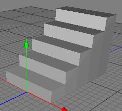
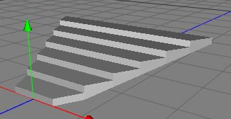

|
Stairs ObjectThe stairs object is undoubtedly the most useful parametric polygonobject ever invented. But only if you are creating architectural scenes. If you don't need a staircase, you probably won't find this feature too useful. The stairs object makes it very easy to produce flights of stairs in various different configurations, saving a lot of time and effort should you need them. The basic staircase appears below left. A somewhat more exciting staircase appears below right.   Properties
|